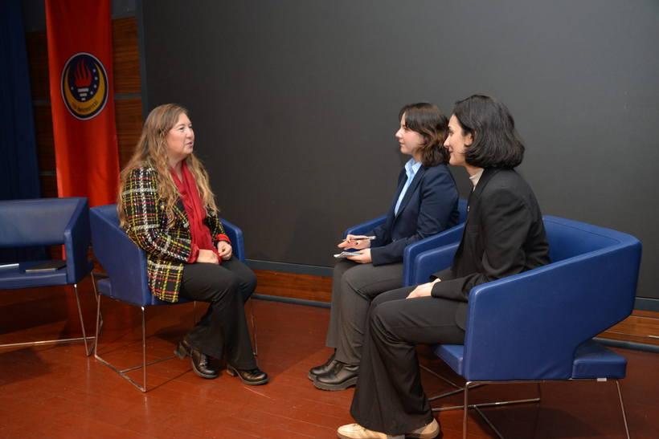
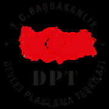
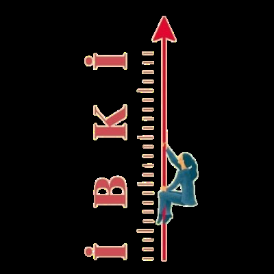
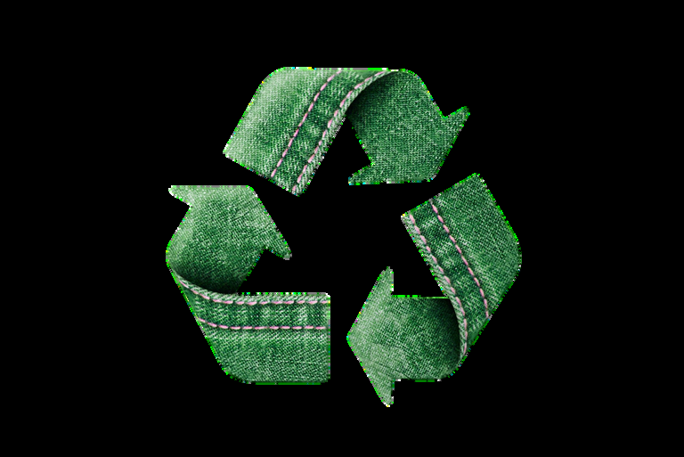
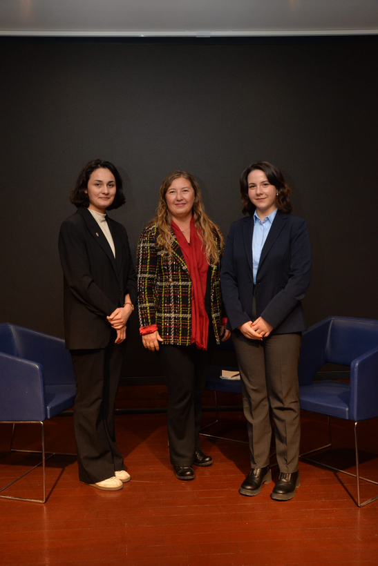

Transitioning from mathematics to the world of social sciences, Prof. Dr. Nazire Nergiz Dinçer has built a career defined by the vital intersection of academic discipline and real-world policy. Her journey reflects a unique blend of experiences, beginning with her education at METU and Bilkent University, followed by her role as a planning expert at the State Planning Organization (SPO). During her years at the SPO, she witnessed the Turkish economy's most critical turning points firsthand, from the 1999 earthquake to the 2001 financial crisis, gaining a "masterclass" in institutional coordination and policy framework. Beyond her international experience at UC Berkeley, she provides a deep dive into her current roles as Chair of the Economics Department at TED University and Director of the TEDU Sustainable Trade Research Center (sTAM).


We are deeply grateful to our professor for her time and for always supporting us. Your guidance has truly made a difference in our journey, and we are so thankful for everything.
From mathematics to macroeconomics
What initially motivated your transition from a background in mathematics to an interest in economics? Additionally, how did your move from the State Planning Organization (SPO) to academia unfold?
When I first started university, I already knew that I loved research and wanted to pursue an academic path. However, while I was in the mathematics department, I began to feel that the field was very traditional. I worried that it would be difficult for me to contribute something truly original there. That's what pushed me toward the social sciences. Economics really appealed to me because it had a strong mathematical foundation, but the subject matter felt so much more alive and compelling. I also quickly realized that I had a natural knack for macroeconomics.
While I was working on my master's, I decided to take the State Planning Organization (SPO) entrance exam just to test my skills, and I passed. At the time, my heart was set on a PhD, but my supervisors encouraged me to balance both my professional and academic life. It turned out to be one of the best decisions I ever made. The SPO was basically an academy back then; department heads would literally stand at the blackboard and lecture us. We were constantly bridging the gap between theory and practice, which gave me a deep, firsthand understanding of the Turkish economy.
I had a natural knack for macroeconomics, and the SPO proved to be one of the best decisions I ever made. — Prof. Dr. Nazire Nergiz Dinçer
After completing your PhD, you spent time at the University of California, Berkeley. What did this experience contribute to your academic development? Do you have any advice for students considering an international academic experience?
Since I completed my PhD in Türkiye, I recognized the need for international experience to broaden my perspective. My goal was to collaborate with a leading scholar at a prestigious institution. This ambition led me to Professor Barry Eichengreen, and I subsequently joined the University of California, Berkeley, for my postdoc studies. This proved to be a highly productive period, enabling me to publish in top-tier journals and making a significant impact on my academic trajectory.
If I were to give one piece of advice to students today, it would be this: actively seek out the opportunities provided by TÜBITAK scholarships. We're living in a time where securing international funding is tougher than ever, so programs like the Jean Monnet Scholarship—whether you apply during or after your PhD—can give you a massive advantage. Don't wait for opportunities to come to you; go after them.
Crisis years and economic policy
The period during which you worked at the SPO was a critical time for the Turkish economy. What are your reflections on that period?
I joined the State Planning Organization (SPO) in November 1998. Consequently, I witnessed major turning points such as the 1999 earthquake and the 2000–2001 financial crises firsthand from a bureaucratic perspective. For me, those years were a real masterclass in how important it is to have strong policy frameworks and seamless coordination between institutions. Being right in the middle of a crisis environment, where I could see both the policy failures and the successful interventions as they happened, was an invaluable experience. It truly shaped how I look at economics and policy today.
Your research interests include international economics, the Turkish economy, and central banking. What factors led you to focus on these areas?
In the beginning, my focus was macroeconomics, and my early research was very much tied to my work at the SPO. However, I ran into a practical challenge: the frequent structural breaks in Turkish economic data made it difficult to conduct reliable time-series analysis.
This technical hurdle, along with my own curiosity to explore new areas, eventually steered me toward microeconomics. It was during this transition that I began collaborating with Prof. Dr. Ayça Tekin-Koru, which has been incredibly enriching. We found a great intellectual rhythm—merging her deep micro-level insights with my macro background created a powerful synergy.
Then came the 2023 earthquakes, a tragedy that changed everything. I felt a strong need to respond to Türkiye's urgent needs, so I pivoted my research agenda toward disaster economics. Disaster research is naturally intertwined with sustainability and climate change. Today, about 60–70% of my work is focused on this field, with a clear goal in mind: finding ways to build economic resilience for our future.
Teaching and institutional leadership
As the Chair of the Department of Economics at TED University, could you elaborate on the structure and opportunities available in the undergraduate and graduate programmes?
TED University is a young, dynamic institution, and I'm very proud of what we've built here. Our Department of Economics boasts a truly distinguished faculty, with six full professors and two assistant professors who bring a wealth of experience to the table. One of the best things about our undergraduate program is its flexibility: students are admitted to the faculty first and only choose their specific major at the end of their first year.
This gives them the time they need to make an informed decision about their future. By the time they reach their final year, we offer a rich variety of electives and require a senior thesis, which I believe is key to preparing them for both the professional world and advanced academic life.
Our master's program is equally special—it's very much "boutique" by design. We keep our student cohorts small to ensure high-quality interaction, and the results speak for themselves. Our graduates are remarkably successful, consistently moving on to PhD programs at prestigious universities both here in Türkiye and abroad, in countries like the US and Germany.
In today's context, how would you assess the importance of studying economics?
I'd like to answer that by sharing an anecdote my colleague, Prof. Dr. Ayça Tekin-Koru, often tells from Prof. Dr. Fikret Görün:
"You can work in fields like physics, mathematics, or chemistry. In those disciplines, the human factor isn't at the core; many of those sciences could exist without humanity. But if you're a social scientist, if you're an economist—you inevitably need people. You simply must understand them."
Societies and individuals are in a constant state of flux. To be a successful economist today, you have to be able to interpret this ongoing transformation. We're living in a time where societies are evolving at an unprecedented pace, and new paradigms emerge almost every day. Whether we're looking at the trajectory of the Turkish economy, global trade wars, or the local impacts of climate change, these challenges demand innovative, human-centric policies. Because economics puts human behavior at its very center, understanding these dynamics makes an economics education more vital than it has ever been.
Women in economics and sustainable trade
How do you evaluate the role of initiatives such as the Women in Economics Initiative (İBKİ) in promoting women's representation in the economics profession? As a female academic and administrator, what are your views on women's representation in economics, their position in the profession, and the key challenges they face?
I believe economics is as much about social justice as it is about markets. Yet, it's clear that women are still underrepresented in academia and policy-making. This is exactly why we founded the Women in Economics Initiative (İBKİ).
We wanted to make the barriers women face visible and challenge the traditionally "masculine" culture of our field. For us, İBKİ isn't just an organization; it's a solidarity network where we mentor young economists and work to dismantle the gendered codes built into our institutions. We can't talk about real progress in economics without addressing systemic issues like the "glass ceiling" or the "leaky pipeline" where talented women are pushed out of career paths. Whether it's the burden of domestic care or the new challenges brought by the digital and green transitions, we need to ensure women are at the center of the conversation. My call to all colleagues and my students who are my "colleagues to be" is simple: let's build this inclusive future together. Join us, support the cause, and let's grow this solidarity into a lasting transformation.
Could you provide information about the TED Sustainable Trade Research Center (TEDU sTAM)?
This center was originally established in 2014 as the Trade Research Center, which Prof. Dr. Ayça Tekin-Koru and I co-founded. However, as sustainability has increasingly become inseparable from trade, we rebranded it last year as the TED University Sustainable Trade Research Center (TEDUsTAM). Our work is quite dynamic; we host international conferences and seminars, such as the "Empirical Investigations in Services Trade" series. On the research front, I'm particularly proud of our team—a highly successful group of talented undergraduate and graduate students. Together, we've already started publishing academic work in the field of sustainable trade.


One of our most exciting current projects involves a massive new dataset we've built by collecting sustainability reports from 705 firms listed on Borsa Istanbul (BIST). With firms now required to report according to the Turkish Sustainability Reporting Standards (TSRS), we are deep into analyzing these disclosures. It's a great time for anyone interested in this field, and I'd like to invite students who are passionate about these topics to reach out and collaborate with us!
Sustainability and the circular economy
What does the concept of sustainability mean? How should its role within economics and its importance for economics students be understood?
The concept of sustainability has grown out of the harsh realities of climate change and the depletion of scarce resources, forcing us to rethink how we use what we have. At its core, economics is all about making choices under scarcity—so, in a way, economics is the very heart of sustainability. Of course, it's not something we can tackle alone; it's inherently interdisciplinary. You need environmental and chemical engineering, data science, and business administration all working together. But honestly, achieving true sustainability without the framework of economics is virtually impossible. From a student's perspective, the momentum in this field is incredible right now. With sustainability reporting becoming mandatory in both the EU and Türkiye, we're seeing a massive rise in demand for "green-collar" professionals. Students who train in this area will have a significant edge in the job market. Whether they end up in the public or private sector, or in production versus services, this knowledge won't just be an "extra" anymore; it will be an absolute necessity for their future careers.
Beyond sustainability, the concept of the circular economy has gained prominence. How would you define the circular economy, particularly in the context of consumerism?
To understand where we are, we first need to look at our current system: we extract, produce, consume, and discard. This is the linear economy. But since global resources are finite, this model is a dead end. Simply increasing efficiency or consuming a bit less might buy us another five or ten years, but it won't save us. We need a complete systemic transformation. This is where the circular economy comes in. It's so much more than just "zero waste"; it's an entirely new way of thinking. In this system, products are designed for longevity from day one. If something breaks, you repair it instead of throwing it away. When it can't be fixed, its components are repurposed, and finally, the materials are recycled. The goal is to keep materials in circulation with as little waste as possible.
I always encourage my students to check out the Ellen MacArthur Foundation. Ellen MacArthur, who once held the world record for the fastest solo circumnavigation of the globe, witnessed the reality of limited resources firsthand while at sea and became a leading voice for the circular economy.
To give you some inspiring examples:
Japan: Newspapers have been produced that, once read, can be planted in soil and will grow into seeds. Textiles (Hiut Denim and Patagonia): The UK-based brand Hiut Denim produces highly durable jeans and offers free repairs when zippers break or fabric tears, thereby extending product life. Similarly, Patagonia replaces faulty zippers in fleece garments free of charge, allowing products to be used for many years. Agriculture: In an Asian farming example, ducks are used instead of pesticides or fertilizers. The ducks consume pests, and their waste acts as fertilizer, resulting in a sixfold increase in productivity.
Finally, what advice would you offer to students and aspiring academics?
1. Read extensively: A social scientist cannot sustain an intellectual life without reading; extensive and continuous reading is essential.
2. Use artificial intelligence but verify: Tools such as ChatGPT can be highly useful, but they are prone to errors. Always verify outputs critically.
3. Learn about sustainability: Regardless of your field, you will need this knowledge in the future. Develop your expertise using reliable sources.
